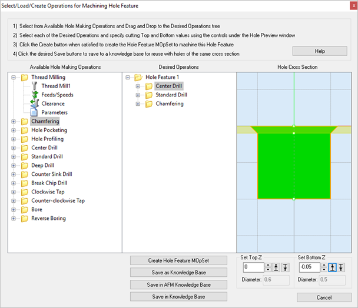

Use this dialog to create a set of machining operations (MOpSet) for a Hole Feature that you have selected from the Features tab of the Machining Objects Browser. This dialog will not display unless you have first selected a Hole Feature from the Features tab.
This dialog contains three sections: 1.Available Hole Making Operations 2.Desired Operations 3.Hole Cross Section These are used to define a set of operations for the selected Hole Feature. Each section is described below.  Dialog Box: Select/Load Operations for Creating Hole Features |
In the left column of the dialog you will see the list of available operations that you can use to machine your Hole Feature. Also, refer to the K-Bases Tab of the Machining Objects Browser for more information about the use of knowledge bases. |
This section of the dialog contains the operations that you wish to use to program the selected Hole Feature. The top-level folder (Hole Feature 1 in the above dialog) is the Hole Feature you have selected from the Features tab of the Machining Objects Browser. Choose from the Available Hole Making Operations listed on the left of the dialog and drag them to the Desired Operations column (i.e., drag folder on left to folder on right). In the above dialog example, Center Drill, Standard Drill and Chamfering operations were dragged from the left column to the right column. |
The Hole Cross Section pane of the dialog shows you a graphical cross-section representation of the selected Hole Feature. See Hole Feature Cross-Section Rules. These rules are applied when a detected hole feature's cross-section varies from those found in the Default AFM Knowledge Base. |
These fields appear when you select an operation you have dragged to the Desired Operations column. They contain the Top Z and Bottom Z values extracted from the selected Hole Feature. You can change the Top and Bottom Z values incrementally by selecting the Move Up or Move Down buttons provided. The new values will be displayed graphically in the Hole Preview pane of the dialog. Note that changing these values will ONLY apply to the operation you have selected from the Desired Operations column of the dialog. Diameter These diameter values are also extracted from the actual Hole Feature geometry and displayed as reference. |
Pick this button to generate a new machining operation from the Hole Feature and its Desired Operations. They will be place under your active Setup of the Machining Job in the Machining Objects Browser. The example machining job shown below shows the selected machining operations for Hole Feature 2 that is shown in the dialog above. You can then select each operation to review/edit any of it parameters such as Cut Parameters, Tool, Feeds & Speeds, Clearance, etc.
|
Pick this button to save the Hole Feature and its Desired Operations as a new Knowledge Base (*.vkb) file. By default, the Hole Feature knowledge base files are located at (C:\ProgramData\MecSoft Corporation\RhinoCAM 20xx for Rhino x.x\FeatureBasedMachiningKBs\). Also, refer to the K-Bases Tab of the Machining Objects Browser for more information about the use of knowledge bases. |
Select this button to save the the Hole Feature and its Desired Operations into the Default (AFM) Knowledge Base file. This file is defined in the Features section of the CAM Preferences dialog. |
Select this button to save the the Hole Feature and its Desired Operations into an (AFM) Knowledge Base file that is not set as the Default (AFM) defined in the Features section of the CAM Preferences dialog. |